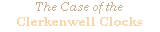
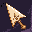
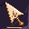
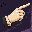
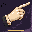
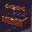
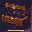
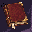
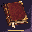

A Sherlock Holmes investigation · teaser

A clockmaker has vanished from a room bolted on the inside. Every clock he left has stopped at seventeen minutes past three.
How it's made: notes, briefs and art studies →








Loading…